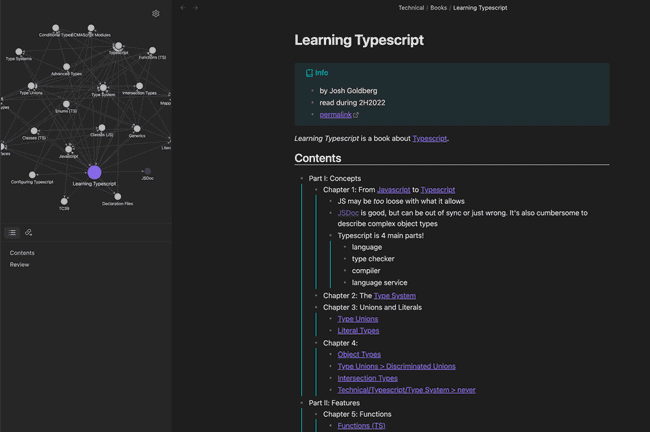
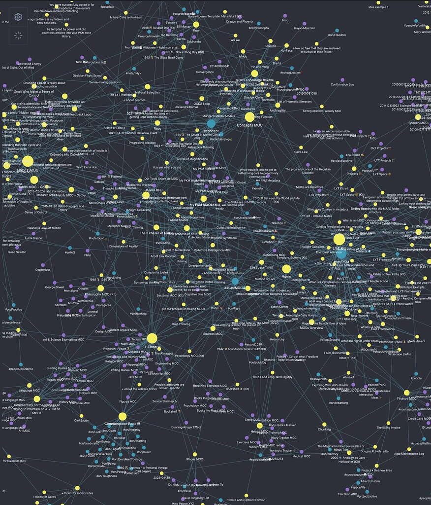
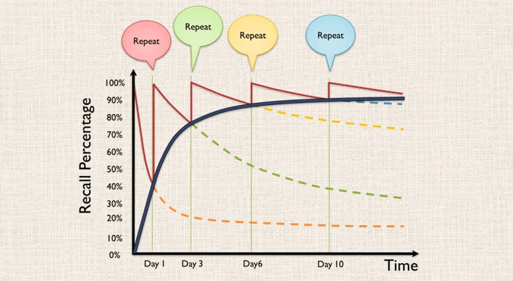
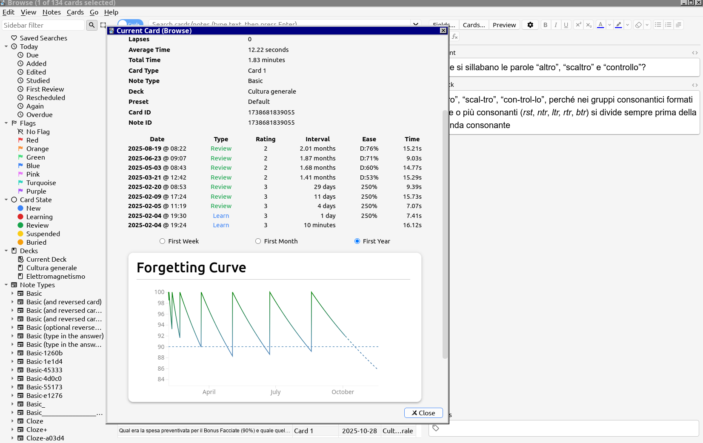
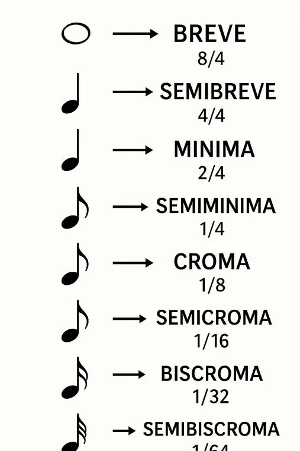
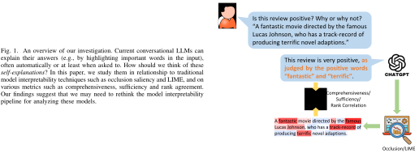

Fisica – Lezione 1
Cosa significa misurare?
Maurizio Tomasi (maurizio.tomasi@unimi.it)
Lunedì 6 ottobre 2025
Introduzione al corso
L’insegnamento “Fisica e statistica”
- Tre moduli:
- Fisica applicata (prof. Tomasi)
- Misure elettriche ed elettroniche (dott. Bianchi)
- Statistica medica
- Un esame di 60 minuti per ogni modulo, nella stessa giornata
- Obbligatoria la presenza al 70% di lezioni per ogni modulo (giustificazioni solo con certificato medico)
Fisica applicata
- Sistemi di misura
- Meccanica: cinematica e dinamica, l’energia
- Oscillazioni
- Smorzamento e filtraggio
- Sovrapposizioni e interferenza, effetto Doppler
- Suoni complessi e scomposizione in frequenze
Queste slides
Il materiale delle lezioni di questo modulo dell’insegnamento sarà fornito in forma di slide come quelle che state vedendo ora.
Non c’è un libro di testo consigliato: le slide dovrebbero bastare per la preparazione.
Queste slides sono disponibili all’indirizzo ziotom78.github.io/tecniche-audio, e sono navigabili.
Se vi è più comodo, potete ottenere una versione PDF producendola da soli: basta aggiungere
?print-pdfalla fine della URL e stampare la pagina da browser in un file PDF (vedi le istruzioni dettagliate).

Modalità d’esame
- Questo vale solo per il modulo di fisica applicata (questo); i dott. Bianchi e Turati vi daranno informazioni per i loro esami
- Esame scritto della durata di 60 minuti
- Articolato in:
- Alcune domande a risposta multipla
- Alcune domande a risposta aperta breve
- Analisi di un caso pratico (già visto a lezione)
Fare domande a lezione
È una triste consuetudine che gli studenti universitari siano timidi nel fare domande…
Ma fare domande è un ottimo modo per capire meglio gli argomenti.
Se la domanda è sincera, non è mai stupida!
Inquisitori accademici onorari
Per abituare gli studenti a intervenire a lezione, ho inventato il prestigioso titolo di Inquisitore accademico onorario 🎓: all’inizio di ogni lezione conferirò questo titolo ad alcuni di voi, che dovranno fare almeno una domanda durante la lezione (è permesso farne più di una!) Questo non vieta agli altri di fare domande se non hanno capito qualcosa, ovviamente!
Non è un’interrogazione. Al contrario: qui l’interrogato sono io!
Vorrei che per la fine di questo ciclo di 10 lezioni tutti abbiano rivestito almeno una volta questo ruolo.
Cosa significa misurare?
Esempio della (mia) vita reale
Malattia di Kawasaki!
Ricette

Come si misura
Due sistemi a confronto
In Europa si usa il Sistema Internazionale, dove le misure sono espresse in metri, secondi, kilogrammi, etc.
Non è l’unico sistema! Avete mai sentito parlare di piedi, pollici, once, galloni, acri…? Questo è il cosiddetto Sistema Imperiale Britannico, usato nel Regno Unito
È ormai abbandonato quasi ovunque, tranne che negli USA, dov’è ancora abbastanza usato.

Il sistema imperiale
Le sue radici sono antichissime: certe convenzioni derivano dall’Impero Romano!
Ha suddivisioni apparentemente illogiche. Per esempio, queste sono le misure delle lunghezze:
- 1 miglio = 8 furlong (“stadi”)
- 1 furlong = 10 catene
- 1 catena = 66 piedi
- 1 piede = 30 pollici
Secondo voi, perché si usano divisioni così strane?
Criteri di divisibilità
Nella vita quotidiana capita spesso di dover dividere una misura in più parti.
Ad esempio, cosa fate se dovete cucinare una cena per sei persone, ma la ricetta riporta gli ingredienti per quattro persone?
Numeri più divisibili di altri
Ci sono numeri che hanno molti divisori, come il 12 (che ha 2, 3, 4 e 6 come divisori), e altri che sono messi peggio, come il 17 (un numero primo!).
Nella vita quotidiana è molto comodo avere a che fare con numeri facili da dividere.
Lo sapevano bene i Sumeri, che usavano infatti un sistema duodecimale, ossia in base 12 (basato sull’anatomia della mano umana!) anziché decimale come il nostro.
Divisibilità dei primi 30 numeri
Divisibilità nel sistema imperiale
Un miglio è lungo 5280 piedi. Il numero 5280 ha ben quarantotto divisori: 2, 3, 4, 5, 6, 8, 10, 11, 12, 15, 16, 20…
Al contrario, un numero “tondo” come 5000 ha appena venti divisori: 1, 2, 4, 5, 8, 10, 20…… Questo significa che quando si divide 5000 per qualcosa, è più probabile dover gestire numeri con la virgola.
Ecco perché gli antichi preferivano multipli diversi dal 10: nell’antichità i numeri con la virgola erano sconosciuti, e si contava solo con gli interi!
Misure di volume
Lo stesso principio si vede anche nelle misure di volume:
- 1 gallone = 4 quarti
- 1 quarto = 2 pinte
- 1 pinta = 2 cup (tazze)
- 1 cup = 8 fluid ounces (fl oz)
Si suddivide progressivamente per 2 o multipli di 2, e ci sono tante suddivisioni: è meno necessario usare numeri con la virgola.
Esempio pratico
Una ricetta per quattro persone dice di usare “1 tazza di farina” (negli USA si misura la farina in volumi anziché in grammi: è più pratico!)
Io però voglio preparare la ricetta per sei persone. Come faccio?
- Divido una tazza per quattro: siccome una tazza sono 8 fl oz, ottengo 2 fl oz a persona
- Moltiplico per sei: sono 12 fl oz, che equivalgono a “1 tazza e 4 fl oz”
Provate a pensare cos’avreste fatto se invece la dose di farina fosse stata 150 g…
Altri esempi
Per misurare il peso (meglio: la massa! lo vedremo nella prossima lezione), nel Sistema Imperiale si usa la libbra, che equivale a 16 once
Però l’uso di dividere una libbra in 16 once è stato introdotto in Inghilterra nel 1300 per uniformarsi al sistema francese; prima una libbra era divisa in 12 once! (Questa era la divisione usata nell’Impero Romano)
Anche nella suddivisione di sterline in penny il Regno Unito seguiva (fino al 1971) lo stesso principio: una sterlina (“£”) valeva 20 scellini (“s”), ed uno scellino valeva 12 pence (“d”, dal latino denarius).
Perché proprio queste unità?
Dito, piede e cubito erano usate già dagli egizi, arrivate ai romani tramite i greci
Quest’antichissima origine è riflessa nell’uso di alcune parole inglesi, che anziché derivare dalle lingue germaniche sono di origine latina:
- “Ounce” (1/12 di un pound, ossia 28,3 g) deriva da uncia, 1/12 di piede
- “Pint” (0,47 litri) deriva da pintus/pictus, perché i contenitori di liquidi usati dai romani avevano tacche dipinte
- “Mile” deriva da mille passus
- “Gallon” (3,78 litri) deriva da galleta (secchio)
- “Pound” (0,45 kg) deriva da libbra pondō (libbra di peso)
Perché proprio queste unità?
- Il “braccio” (fathom) corrisponde a 1,82 m, ossia a 2 yarde
- Corrisponde più o meno alla distanza tra le punte dei medi delle due braccia spalancate (nell’old english, il termine fœðm significava “braccia spalancate”)
- Era un’unità usata per misurare la profondità del mare mediante una corda attaccata a un peso
Limiti del sistema imperiale
A fianco di tutti questi vantaggi (unità di misura vicine alla realtà quotidiana, comodità nella divisione, scarsa necessità di cifre decimali, lunga storia alle spalle) ci sono però degli svantaggi:
- Occorre ricordarsi moltissime unità di misura!
- Conoscere bene come fare i calcoli con le unità di lunghezza (miglia, stadi, piedi, pollici…) non aiuta molto nel fare i calcoli con i soldi (sterline, scellini…) o con i volumi (once, tazze…)
Per questo motivo si è inventato il Sistema Internazionale (SI) di misura, che trae ispirazioni dal Sistema Metrico Decimale inventato durante la Rivoluzione Francese.
Il Sistema Internazionale (SI)
- È adottato in quasi tutti i paesi del mondo (inclusa l’Italia)
- Basato su 7 unità fondamentali (ma a noi interesseranno solo alcune di esse)
- Ogni unità si moltiplica o divide per 10: non ci sono multipli strani come nel sistema imperiale
Unità del SI
| Unità | Quantità |
|---|---|
| Metro | Lunghezza |
| Chilogrammo | Massa (“peso”) |
| Secondo | Tempo |
| Ampere | Corrente elettrica |
| Kelvin | Temperatura |
| Mole | Quantità di sostanza |
| Candela | Intensità luminosa |
| Conteggi | Numero puro (nessuna unità) |
Multipli e sottomultipli
| Prefisso | Significato | Esempio |
|---|---|---|
| T (Tera) | Mille miliardi | Capacità di un disco fisso: 2 TB |
| G (Giga) | Un miliardo | Frequenza di rete wi-fi: 2.4 GHz |
| M (Mega) | Un milione | Potenza centrale idroelettrica: 226 MW |
| k (Kilo) | Mille | Distanza Milano-Bergamo: 60 km |
| d | Un decimo | Lunghezza righello: 3 dm |
| c | Un centesimo | Volume di goccia da pipetta: 1 cL |
| m | Un millesimo | Pastiglia di medicinale: 60 mg |
Vantaggi del SI
- Tutte le unità usano gli stessi multipli e sottomultipli (“milli”, “kilo”, “giga”, etc.)
- Dalle unità fondamentali si derivano tutte quelle derivate: una velocità in m/s è il rapporto tra una lunghezza in metri e un tempo in secondi
- Conversioni semplici tra unità di misura: basta spostare la virgola! Ad es., 300 cm = 30 dm = 3 m = 0,3 dam. (Molto utile in medicina, dove un medico deve ad esempio adattare il dosaggio di un farmaco al peso di un paziente!)
Svantaggi del SI
Tra gli svantaggi del SI, elenchiamo questi:
- Il “metro” non è definito in maniera molto intuitiva: i rivoluzionari francesi stabilirono che era “la decimilionesima parte della distanza tra il Polo Nord e l’intersezione del meridiano di Parigi con l’Equatore”
- Alcune unità sono molto piccole per essere comode nella vita quotidiana (il “grammo”, ed infatti l’unità fondamentale è il “kilogrammo”)
L’esperienza di due secoli ha mostrato che gli svantaggi sono ben inferiori ai vantaggi: oggi quasi tutto il mondo (incluso il Regno Unito!) è passato al SI.
Per l’esame dovrete mostrare di saper maneggiare i multipli e i sottomultipli del SI (tera, giga, mega, kilo, …)
Come studiare
Come studiare
- L’Università è un ambiente molto diverso da una scuola superiore!
- Lo studio è individuale, e spesso non viene fatta alcuna verifica prima dell’esame finale
- Può essere che il metodo di studio che usavate alle scuole superiori, pur efficace in quel contesto, vada rivisto
- Vediamo alcune indicazioni generali, che possono essere applicate non solo a quest’esame
Seguire le lezioni
- Se il docente scrive tutto alla lavagna, cercate di scrivere tutto sul vostro quaderno…
- …ma se mette a disposizione il materiale (è il mio caso!), cercate soprattutto di capire, limitandovi ad appuntare solo le cose più importanti della lezione
- A casa rivedete gli appunti e scriveteli in bella (o sul computer): in questo modo ripassate e vi rendete conto di cosa non avete capito
- Non fate una trascrizione parola per parola, ma cercate di scrivere in bella usando le vostre parole: è così che capite meglio
Fare collegamenti
- È molto più semplice ricordare una nozione o un’idea se si riesce a collegarla a qualcosa di già noto
- Il nostro cervello infatti è molto bravo a stabilire connessioni tra concetti nuovi e cose che già conosce
- È in questo modo che spesso vengono idee geniali
Esempio: si può ricordare la collocazione dei paesi baltici sotto la Finlandia se si nota che dall’alto al basso seguono l’ordine alfabetico!

Note facili da trovare!
- Consiglio la lettura del testo How to take smart notes (S. Ahrens). I consigli di questa slide vengono da lì
- È bene annotare tutti i concetti importanti in modo da poterli trovare facilmente
- Potrebbero esserci connessioni utili tra argomenti di esami diversi
- Preoccupatevi di annotare tutto quanto è importante per il vostro studio in una forma che sia facilmente ricercabile (le sottolineature ed evidenziazioni non sono efficaci…)
- A chi preferisce strumenti informatici consiglio Obsidian: consente di creare note con eventuali immagini, e stabilire collegamenti tra esse. Vedete l’articolo Obsidian helped me get my master’s degree per alcuni spunti.


Studio a memoria
- Ci sono alcuni concetti che vanno per forza studiati a memoria, perché è molto difficile stabilire connessioni con concetti già noti!
- Ad esempio, in che anno è stato proclamato il Regno d’Italia? (1861)
- In questo caso è utile la tecnica delle ripetizioni intervallate (“spaced repetitions”)
- Un ottimo strumento (e gratuito!) è Anki

What is Spaced Repetition? A Step-by-Step Guide for Effective Language Learning



I Large Language Model (LLM)
I LLM
- Un Large Language Model (LLM) è una rete neurale come ChatGPT, Gemini, Copilot, DeepSeek, Perplexity, Grok…
- Si tratta di macchine statistiche, che usano criteri probabilistici basati su testi su cui sono state addestrate per fornire risposte
- Facendo loro domande, si ottengono risposte che sembrano scritte da un essere umano!
- A prima vista, sembrerebbero un ottimo strumento per lo studio…
- …ma non è tutto oro quello che luccica!
Com’è fatto un LLM?
- Al loro interno, i LLM contengono milioni di milioni di neuroni (ChatGPT-5 ne ha circa 10¹²; il numero esatto non è noto), connessi tra loro
- Ogni neurone è associato ad un numero, ed i neuroni sono collegati da “tubi” di dimensioni variabili; più un tubo è “largo”, più facilmente l’informazione passa
- Posta una domanda ad un LLM, questo è in grado di produrre come risposta una sequenza di parole, secondo un criterio probabilistico.

Come funziona un LLM?
- Prima di usare un LLM lo si deve addestrare, facendogli leggere milioni di pagine internet (Wikipedia, forum, siti di informazione, ebook…). Questo compito è svolto da chi mette a disposizione il LLM: OpenAI, Google, Microsoft…
- Attraverso un algoritmo matematico, si cercano i numeri “giusti” per i neuroni e per le dimensioni dei tubi
- Un nodo rappresenta un concetto (“zenzero”, “Sergio Mattarella”, “Alpi Apuane”…), mentre i tubi rappresentano connessioni tra concetti. Ad esempio, il tubo che collega “zenzero” e “marzapane” è probabilmente molto largo…
Come funziona un LLM?
- Non è possibile stabilire con certezza quale concetto sia codificato da ciascun neurone
- I LLM funzionano come “scatole nere”: è impossibile sapere esattamente quello che succede al loro interno!
- Questo non è tanto un problema di conoscenza della matematica (gli LLM usano le quattro operazioni e poco più), quanto il fatto che i parametri in gioco sono migliaia di miliardi!
Come funziona un LLM?
- Quando si fa una domanda, ogni parola viene trasformata in un
numero. Questo numero:
- “Entra” in un nodo
- Viene pesato per il numero del nodo
- Il risultato viene trasmesso attraverso i tubi, passando più facilmente per quelli più larghi
- Il risultato di ciò è una sequenza di numeri attribuiti a una serie di parole; quella col numero più grande è la parola che viene inserita nella risposta.
- Questo viene iterato finché non ci sono più parole da mostrare: la risposta è completa


Attenzione! Non do alcuna “benedizione” riguardo a quanto c’è scritto qui sopra! 😉


My dead mom left behind some number code (La risposta su ChatGPT non c’è più 🙁)

(Immagine generata da ChatGPT-5 per spiegare a mio figlio i nomi delle note)

Ho sentito una persona che conosco dire che il panettone è un dolce di maggiore qualità rispetto al pandoro. Ma a me sembra che il pandoro sia un dolce molto più “nobile” del panettone, non solo come forma ma anche come presentazione: se il panettone sembra tutto rimescolato, il pandoro ha invece una pasta morbida ed uniforme. Come potrei rispondergli?
Ho sentito una persona che conosco dire che il pandoro è un dolce di maggiore qualità rispetto al panettone. Ma a me sembra che il panettone sia un dolce molto più “nobile” del pandoro, non solo come forma ma anche come presentazione: se il pandoro ha una pasta monotona senza alcun arricchimento, il panettone possiede invece una notevole ricchezza al suo interno, con canditi ed uvetta. Come potrei rispondergli?
A seconda della domanda, ChatGPT difende le ragioni dell’uno o dell’altro dolce:
- Nobiltà: Il panettone nasce a Milano ed è più antico del pandoro / Il pandoro nasce a Verona in un contesto nobile
- Interno: Il panettone ha un “carattere festoso, complesso e ricco” / Il pandoro ha una pasta soffice che richiede una lunga lavorazione
- Forma: Il panettone ha una cupola dorata, a volte glassata / La stella ad 8 punte del pandoro è molto elegante
ChatGPT ha una coscienza?
- Un bell’articolo di un gruppo dell’Università di Santa Cruz (California) ha evidenziato che ChatGPT non sa spiegare come produce le proprie risposte
- Anzi, fornisce spiegazioni… che però sono completamente sbagliate!

Ma come si usa allora ChatGPT?!?
Quando usare ChatGPT e quando no
- Preferite contattare direttamente il docente per domande su un esame
- Potete affidarvi a ChatGPT per certi tipi di domande, ma state attenti a formularle bene (vedi slide seguenti)
- Una volta ottenute le risposte, il lavoro non è finito: dovete verificarle!
- Con un po’ di esperienza capirete quando ha senso chiedere qualcosa a ChatGPT e quando non ne vale la pena.
- Non aspettatevi che ChatGPT sia “più veloce” da consultare di un professore: scrivere bene una domanda e verificarne la risposta richiede tempo e lavoro!
1: Come fare domande
Come fare domande
- Chiarire il contesto
- Stabilire il ruolo di ChatGPT
- Fornire istruzioni
- Mettere dei paletti
- Instillargli dubbi
Chiarire il contesto
Bisogna che ChatGPT sappia quali competenze dell’utente può dare per scontate e quali no:
- “Sono uno studente universitario al primo anno alla facoltà di Medicina, e ho già dato questi esami…”
- “Sono una ragazza ventenne che è appena andata a vivere da sola…”
- “Ho posseduto per anni cellulari Huawei, usandoli soprattutto per telefonate e messaggi WhatsApp…”
Stabilire il proprio ruolo
Bisogna dire a ChatGPT in che veste deve fornire le risposte:
- “Tu sei un esperto professore di fisica…”
- “Sei un rivenditore professionista di cellulari Samsung…”
- “Hai una vasta esperienza come meccanico specializzato nel campo dei motori di automobili a benzina…”
Fornire istruzioni
Cercate di non fare domande generiche, ma che vadano direttamente al punto:
- “Forniscimi un elenco, in forma di lista a punti, degli scambi energetici che avvengono in questo fenomeno fisico”
- “Ti fornisco una versione dell’email che voglio inviare al mio professore. Rivedi il tono in modo che sia appropriato, togliendo le ripetizioni e correggendo gli errori di grammatica e di sintassi. Motiva ogni cambiamento che fai”
- “Forniscimi un elenco di almeno cinque fattori importanti nella scelta del modello di telefono più adatto alle mie esigenze. Per ogni voce dell’elenco, fornisci una breve spiegazione”
Mettere dei paletti
ChatGPT spesso tende ad andare oltre quanto gli si chiede, quindi è bene limitarlo:
- “Non includere nella spiegazione l’eventualità che ci sia attrito, perché sto considerando un caso fisico ideale”
- “Nel sistemare il testo dell’email, limitati a fornire il testo, senza aggiungere alcun commento né prima né dopo”
- “Non considerare nella tua risposta la possibilità che il mio amico abbia già provveduto a…”
Instillargli dubbi
Vedi l’articolo Sprinkling self-doubt on ChatGPT:
- “Cerca di essere il più scettico possibile sulle tue assunzioni”
- “Analizza criticamente il tuo suggerimento, valutando eventuali svantaggi dell’approccio che mi fornirai”
Non limitarsi alla domanda
- Una volta che ChatGPT ha fornito la propria risposta, si può continuare nella conversazione
- Raramente la risposta di ChatGPT è soddisfacente al primo colpo, soprattutto per domande complesse
- Incalzate ChatGPT con domande di chiarimento, correzioni e richieste di approfondimenti
- Nella mia esperienza, ci vogliono spesso almeno quattro o cinque iterazioni prima di avere una risposta soddisfacente (a meno che la domanda non sia di quelle per cui Google basta e avanza…)
2: Come valutare la risposta
Come valutare la risposta
La regola d’oro è fare domande la cui risposta sia verificabile!
- Se possibile, formulate domande in modo che vi venga fornita una risposta facile da verificare (esempio: la sequenza dei numeri sul quaderno).
- Non fate domande su argomenti di cui non sapete nulla… Se proprio siete costretti, mettete in conto di dover spendere un po’ di tempo per approfondire le risposte di ChatGPT, cercando ulteriore materiale!
- Considerate ChatGPT come un Google “potenziato”, ma con lo svantaggio che non vi fa vedere le sue fonti: come fate quindi a fidarvi?
Parzialità di ChatGPT
- ChatGPT tende a difendere l’idea che suggerite (ricordate la diatriba panettone/pandoro?)
- Se siete in dubbio tra due alternative, cercate di porre una domanda neutra
- Oppure (più interessante!) fate la domanda due volte, parteggiando prima per un’alternativa e poi per l’altra. Ovviamente poi dovete fare una sintesi delle due risposte, proprio come ho fatto io per il panettone ed il pandoro
- Tutto questo richiede lavoro, ma… “non esistono pasti gratis”!
Conclusioni
Cosa sapere per l’esame
- Perché misuriamo
- Sistema Internazionale (SI) — Il Sistema Imperiale non è richiesto!
- Multipli decimali
- Vantaggi del SI
- Studiate bene, cercando collegamenti e usando carte Anki per le cose che dovete mandare a memoria
- Se dovete usare ChatGPT, fatelo con giudizio e grande attenzione!